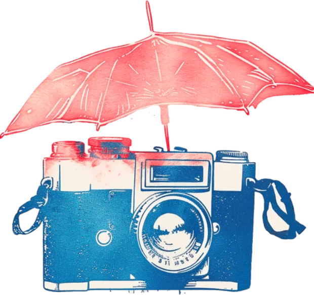
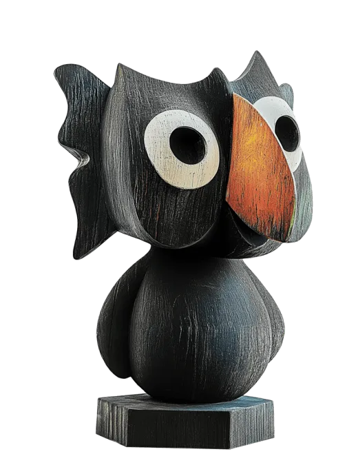
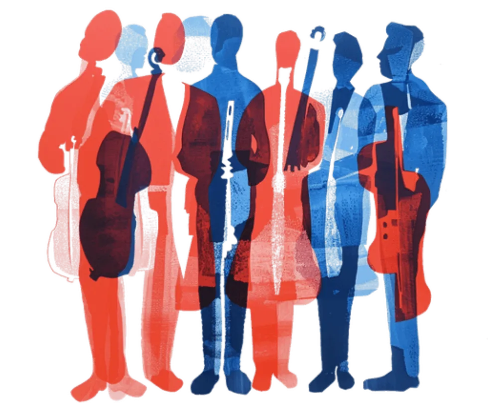
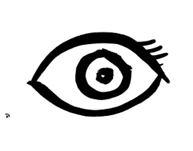

Good dopamine
Get your dopamine through creation, not consumption.
Feeling stuck in a rut of social media, notifications, and the omnipresent news cycles? Rebalance the scales of consumption and creation with playful, neuroscience-backed creative challenges.
Explore and play to rebuild your focus and purpose. It’s fun, engaging, and works in just a few minutes a day.
Struggle to read anything longer than a tweet? Or to spend time really thinking? You’re not alone. More than half of us report that our attention span is shorter than it used to be.
Every day is a new barrage of attention grabbing information. We’ve become chronic multitaskers struggling to focus.
Creative practice helps you rebuild.
Altering shows you how.
I have been really enjoying Altering! I find that my mind can get stuck in the day to day tasks which can often leave me feeling a little bit down or anxious. Having these opportunities for play and creativity are fantastic!! Love the app!
I feel inspired, I feel juicy, and I feel like I move through the day better.
I always felt better, like I accomplished something. It felt like self-care, like when you’re hungry and you feed yourself. It was satisfying.
That 10-minute activity helped me get out of a negative thought spiral. It was amazing how something so small could have such a big impact.

We provide daily neuroscience-backed challenges that help you build cognitive flexibility and creative resilience, spark game-changing ideas, and gain the confidence to innovate like never before.
It’s fun, engaging, and works in just a few minutes a day.
Spending time on creative thought doesn’t just make you better at having novel ideas; it makes you more resilient, confident in learning new skills, and open to novelty. It gives you the space to explore what you really believe, away from the pressures of the media onslaught.

Get your dopamine through creation, not consumption.
Learn to quickly drop into focused flow. Practice sticking with a problem and exploring novel solutions.

Creative play helps you see what you can achieve. We make it easy to get started. No wrong answers or bad ideas.
Handle stress better, learn to focus on the world around you.
Audio guided practices make it easy to drop into a burst of creative play. An active 10 minute activity to kick-start your day.
Follow our structured creative growth plan to explore and strengthen each aspect of your creative cognition.
Find the playful creative play that’s right for you, right now; or use a short exercise to warm up for other creative work.
Time spent being playful and creative lowers stress, boosts happiness, and increases longevity. Over time, a regular creative practice promotes adaptability, engagement, and focus.
Solve problems in open-ended, innovative ways. Build emotional resilience and the flexibility to handle life’s challenges.
Tap into your best self—the one that feels fully alive, curious, and engaged. Explore your own viewpoints and discover what makes your perspective unique.

Rebuild your attention span and rewire reward pathways. Reignite a sense of happiness and flow in your daily life.
I find that my mind can get stuck in the day to day tasks which can often leave me feeling a little bit down or anxious. Having these opportunities for play and creativity are fantastic!